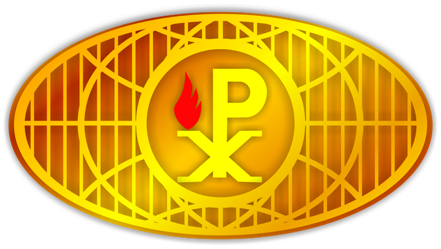

Ada yang sedang dinyalakan untuk rumah kita.
Sesuatu yang istimewa sedang disiapkan dengan penuh kasih. Simpan tanggalnya dan tunggu kejutannya.
Hitung mundur menuju Minggu, 18 Oktober 2026 pukul 07.00 WIB.
--Hari
--Jam
--Menit
--Detik
Minggu, 18 Oktober 2026 · 07.00 WIB
Selamat ulang tahun, GIA Kediri!
Terima kasih telah menjadi rumah bagi kita semua. Kiranya api kasih dan semangat kita terus menyala. GIA is my home.